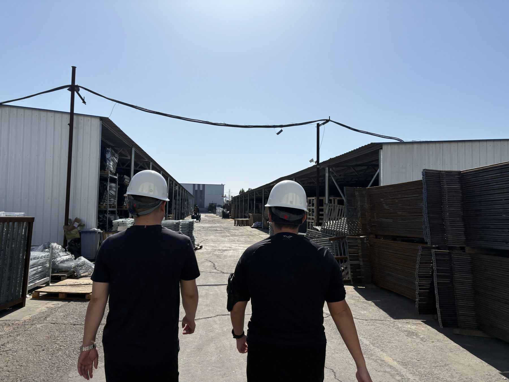
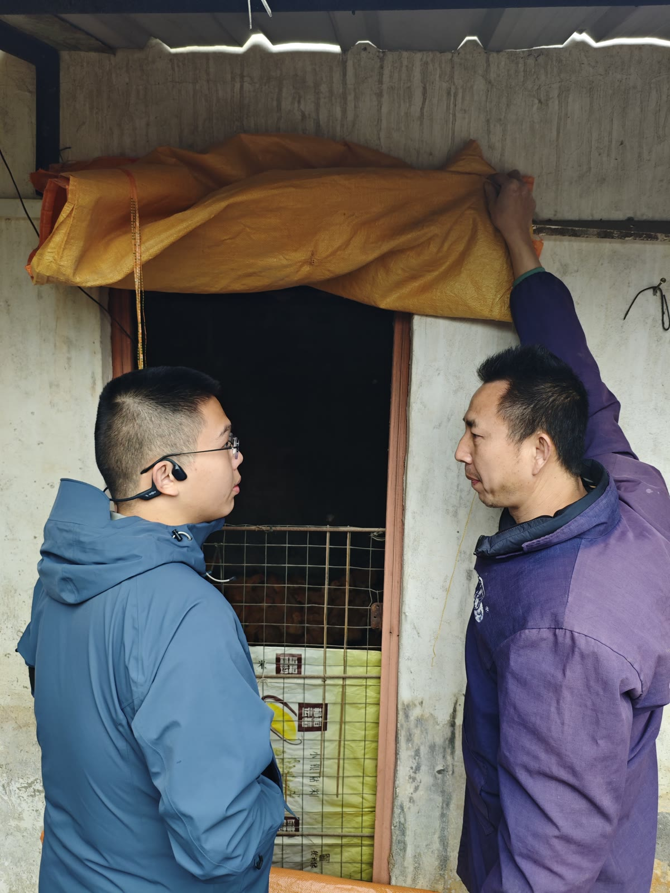
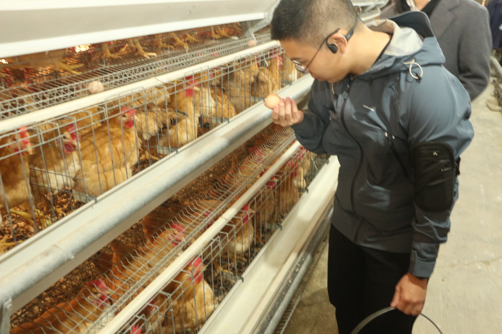
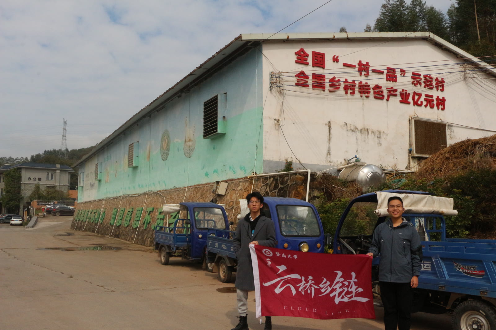
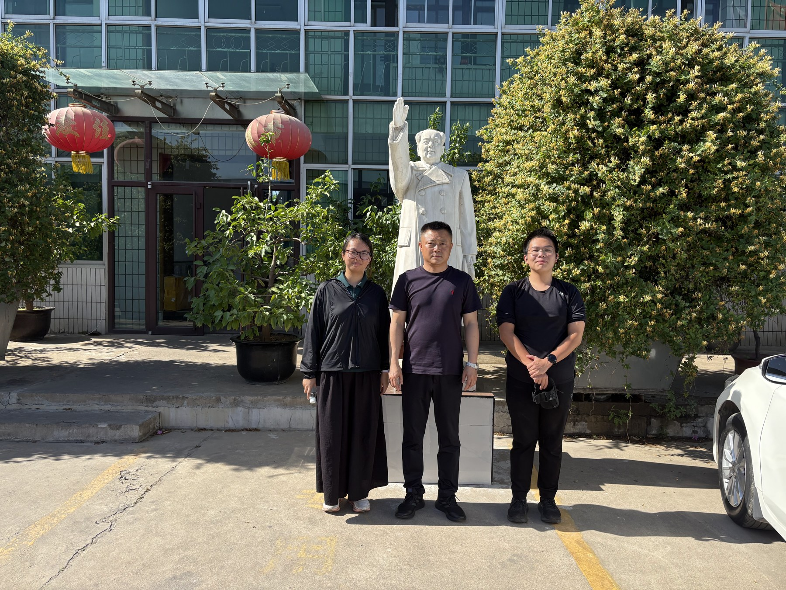

乡链 · 本地供给节点
- 质量分级
把外观、清洁度、新鲜度等判断转化为可记录、可比较的依据。
- 养殖户协同
汇集产能、库存与订单信息，协调议价、风险与供货。
- 价值提升
围绕共享品牌、加工与基础设施形成共同能力。
- 配套服务
接入金融保险、技术指导和市场信息。
真实产业现场 · 商业策划 · 团队协作
“云桥乡链”
走进养殖与流通现场，理解一枚鸡蛋背后的供需、价格与经营决策。
我带队走访河北、湖北、贵州、广东的养殖、贸易与企业运营现场，据此形成“乡链—云桥”两阶段商业方案；我的重点工作是方向判断、任务拆分、跨组协调、成果验收与整体整合。

项目起点
从生产、产地汇集到区域流通、终端渠道和需求端，鸡蛋持续向下游移动；供给、报价、订单、库存和采购意向则需要跨节点往返传递。
左右滑动查看完整链路
湖北调研 · 蛋品流通链路
双向传导，都有摩擦。货源、规格与报价向下游传递，订单、库存与采购意向向上游反馈。
市场变化快，生产调整慢。调货与库存可以先响应，新增产能仍要经过补栏、育成与开产。
产业走访
我带头在河北、湖北、贵州、广东等地开展实地走访，从养殖、贸易和企业经营现场理解供需、价格、产销衔接与信息流动。走访所得进入行业分析和商业判断。




河北 · 湖北 · 贵州 · 广东 / 四地走访，连接养殖、流通与经营现场。
商业方案
方案先把分散供给组织成可识别、可协同、可服务的本地节点，再连接跨区域需求、渠道与专业服务。
把外观、清洁度、新鲜度等判断转化为可记录、可比较的依据。
汇集产能、库存与订单信息，协调议价、风险与供货。
围绕共享品牌、加工与基础设施形成共同能力。
接入金融保险、技术指导和市场信息。
匹配地区产能和渠道订单，组织运输、配送与损耗控制。
维护质量规则、检测要求和认证表达。
连接零售、餐饮、电商、团购等需求方。
汇集专业服务与市场信息，支持生产和经营判断。
左右滑动查看完整链路
公益导向的产业服务让分散的中小主体更容易获得信息、标准与专业支持，并以适度服务收益维持项目运转。
个人研究与设计
参与蛋品企业的一线业务与信息工作，让我把行业问题放回具体的经营场景：货从哪里来，库存如何消化，经营者又依据什么作出判断。
我的行业分析把生产、库存与区域流通放在一起。行情可以迅速变化，经营者的调整却受产能、销售窗口和市场连接方式约束。
补栏 → 育成 → 开产
到货 → 储运 → 销售
产地 ⇄ 流通 ⇄ 销地
短期看库存、走货与调货；更长时间看产能调整与需求变化。
规模要与销路一起看。扩大产能的同时，也需要考虑库存消化、销售网络与经营风险。
地区要放回链条里比较。同一种产品，在不同地区的供给、渠道和流通条件下，会呈现不同的经营处境。
我围绕产品特性、供给结构与区域流通整理行业分析，并把现场观察画成供应链草图。鸡蛋的损耗与质量变化，使库存决策必须同时考虑销售时间和渠道；分散的生产格局，又让信息获取和资源组织成为重要问题。
小规模生产的持续存在，需要结合当地成本、疾病风险、销售渠道和经营习惯理解。对企业的判断也由此回到具体条件：产能如何消化，信息怎样获得，规模扩张能否被市场连接能力支撑。
在参与蛋品企业一线业务与信息工作的过程中，我围绕区域报价与行情信息需求设计信息服务方案，后续将其纳入云桥项目。
同类报价，才放到同一张桌面上。
一个数字，连接几种不同的现场条件。
让地区信息与实际决策产生联系。
采购到货成本如何比较？
库存周转能否匹配销售窗口？
出货不同渠道如何承接？
个人信息服务设计
纳入团队项目，形成界面演示
可供量 · 产品规格 · 出货节奏
采购需求 · 到货成本 · 周转速度
比较思路：先对齐地区、时间与规格，再解释报价差异。图中为项目原型画面。
我将区域报价、产品规格、库存与走货、行情观点和信息审核整理成产品需求，明确不同使用者如何查找、比较与理解信息。
地图让地区差异可见；报价详情与历史记录用于进一步对齐比较口径；市场反馈则把价格数字连接到具体经营情况。面向中小主体的信息服务，是这一设计的出发点。
比单个报价更吸引我的，是供需变化如何经由库存、流通与市场预期进入价格，以及经营者如何回应。我将这些问题整理为行情分析工具构想，探索把现货与期货、供需与成本等信息联系起来的方法。
现货与期货
补栏、产能与库存
成本与终端需求
对齐时间与地区口径
比较供需与流通变化
提出可验证的解释
市场观察与信息汇总
条件不同的情景比较
下一轮需验证的问题
概念设计行情分析工具 · 持续观察价格形成与经营响应
协作系统
我与核心成员确定阶段目标，让不同专业的成员承担相应工作；我负责跨组协调、阶段验收与整体方案整合。共同制定的方法，通过飞书文档与多维表格进入日常推进：用任务关联成果，以不同视图协调分工与进度。
项目协作工具让共同制定的方法进入日常推进
通过任务分派、分层验收与进度视图，组织专业工作之间的协作。下方展示分工结构与具体做法。
阶段目标 · 关键判断 · 工作方法
协调跨组问题
验收阶段成果
完成整体整合
任务与成果关联
来源与版本可追踪
专业判断可讨论
跨专业分工与协作关系
确认小组任务后，由组长统筹分配与执行。我把注意力放在组际衔接和整体方案上。
鼓励成员讲明判断依据，解释专业概念，并提出有事实支撑的异议与修改建议。
组长验收成员成果，我验收小组成果；关联紧密的任务，也可由下一任务负责人验收。
“组长检验组员成果，负责人检验小组成果。”本人《任务表格使用手册》节选
任务视图示意
阶段收束 / 研究延伸
阶段性调研、商业策划与产品设计已告一段落，后续可结合条件继续推进。这段经历也让我进一步关注商品供需、价格与经营决策。